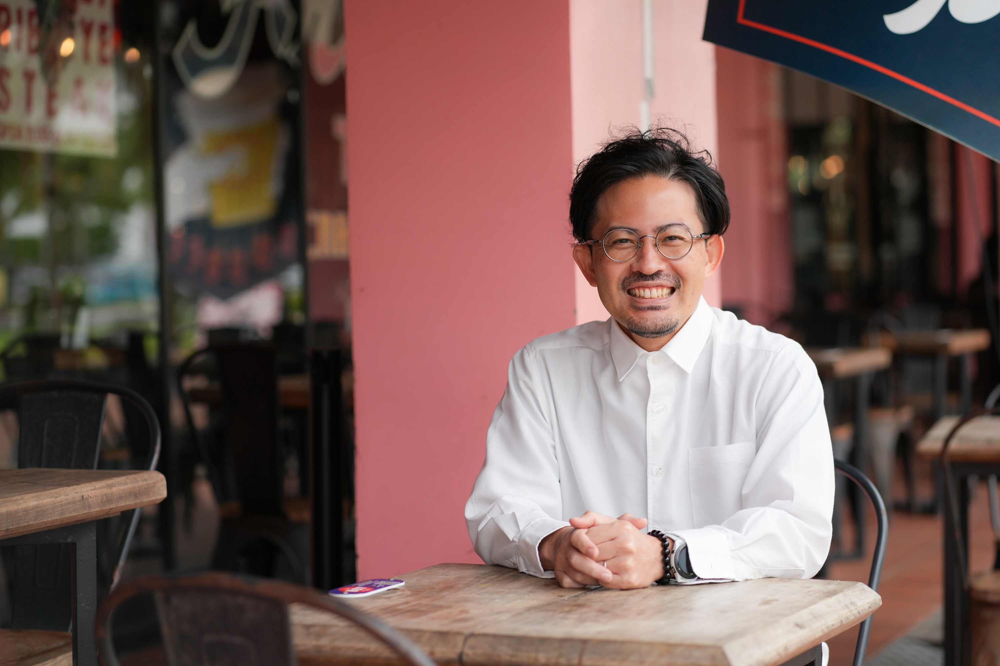
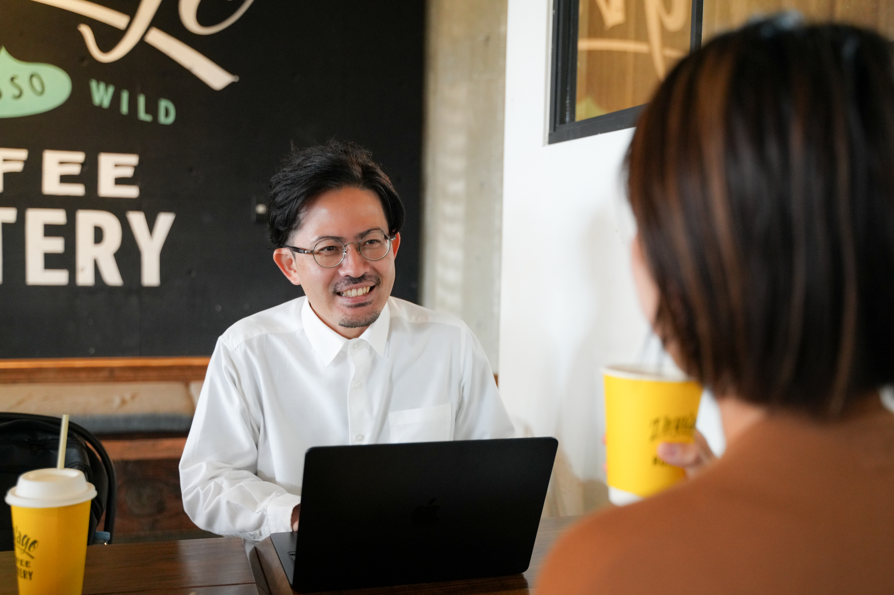

Profile
代表プロフィール
U-WAN（ユーワン）代表 ／ 棚原 秀樹。沖縄県読谷村出身。社長の右腕となることを仕事にしています。
Introduction
はじめまして。
棚原秀樹です。

U-WAN 代表 ／ 棚原 秀樹 Hideki Tanahara
僕は主にAIによる効率化を推進しながら、コミュニケーション重視の人材育成をやっています。こんな話をすると、よく「効率化とコミュニケーション重視って正反対じゃない？」と聞かれます。それに対する僕の答えは目指すゴールは同じ
です。
効率化できることはAIでとことん効率化し、組織作りやコミュニケーションなど、重要なことにはとことん時間と力を注ぐ。そのためにAIがあり、その設計をするために僕（コンサルタント）が存在します。
これからの時代、ますますAIは進化を遂げていきます。僕たちはAI時代を生き抜いていかないといけない。だけどそれは逆説的に「人間の時代」が来るのだとも思っています。人間として何を大事にし、時間を使うか。今いる仲間とどんなチームを創り上げていくか。その方法を、みなさんと一緒に考えていければ嬉しいです。
- Name
- 棚原 秀樹（Hideki Tanahara）
- Born
- 沖縄県 読谷村
- Hobby
- マラソン
- Favorite
- お寿司
- Motto
- じりつ（自立・自律）／ 成長 ／ 変化
Introduction by others
棚原秀樹は、こんな人。
こんにちは。ライターの三好と申します。
突然すみません。このHPの文章を担当している者です。
棚原さんという人物像を伝えるべく、すこしだけ「他己紹介」をさせてください。
まず、わたしが思う棚原さんを箇条書きします。
- 誠実で、誰に対してもフラット
- 落ち着きがあり、安心感がある
- 向上心があり、成長意欲に忠実（猪突猛進）
- 素直で正直
- やさしい
- 人好きで、人を信じる力がある
- 仕事好きすぎ（ちょっと心配）
- めっちゃ健康
- 好奇心旺盛
- おじいちゃんになっても、たのしそうに何かやっていそう
もっとありますが一旦これで。上から順番に説明します。
① 誠実で、誰に対してもフラット
とにかくどんな人の話も丁寧に聞き、どんな話も馬鹿にせず、誠実に耳を傾けてくれます。わたしは犬も食わない夫婦の話を長々と聞いてもらいました。
老若男女だけでなく、犬やAIにも誠実で対等。今流行りの「多様性を大切にしましょう」とかじゃなく、生まれたときからすべての生きものに対して「同じ生きもの」として接しているんだと思います。どんな教育をしたらこんな風に育つのか、親御さんにぜひご教授いただきたい。こんな人ばかりなら、きっと世界は平和になるでしょう。
② 落ち着きがあり、安心感がある
③ 向上心があり、成長意欲に忠実（猪突猛進）
このふたつはギャップ萌えなのでセットで説明します。
まず、どんなにハードな話をしても「うわぁ、やばいですね」と言いつつ声は一定で、にこやかな顔をしています。安心して話をし続けられる穏やかな佇まいなのに、ご自身の成長意欲は凄まじい。他人のことは決してジャッジしないのに、自分は凄いスピードで走り続けています。（実際にランナーでもあります）
④ 素直で正直
⑤ やさしい
このふたつはそのままです。
何度会っても、どんな話をしても「嘘がないな」と感じます。
そして「嘘がない」けど、言葉やタイミングはめちゃくちゃ考えてくれるんですよね。やさしいんです。とても。なので心がとても折れていても、この人には打ち明けてみたいって思っちゃうんですよね。
⑥ 人好きで、人を信じる力がある
このスキルがレベチすぎて、年に数回「学校の先生になってください」とお願いしています（笑）わたしが子どもの頃に、こんな大人が近くにいたら嬉しかったと思うからです。いつもふわっと逃げられるので、最近は不登校の子どもに向けたYouTuberをゴリ押し中。
⑦ 仕事好きすぎ（ちょっと心配）
⑧ めっちゃ健康
これもセットです。スケジュールを聞くと、なんでこんなに健康なのかわからないです。
先日、睡眠時間を聞いたら「3日で3時間くらいですかね」と言っていました。寝ろ！！！！！！
⑨ 好奇心旺盛
今はAIにハマっているそうですが、AIについて質問をするととてもたのしそうに、いろんな角度からいろんな話をしてくれます。実は棚原さんがAIにハマっていると聞いたとき、最初はすこし意外でした。棚原さんは「人間力」の人だと思っていたので、効率化、機械化、みたいなキーワードはあんまり合わない気がしたのです。
だけど話を聞いて大納得。AIは「本当に大切なことに向き合うための手段」だと言うのです。だから「大切なことに着手してもらうために最大限活用して欲しい」とのこと。なるほど、それはとても棚原さんっぽい。
さらにこんなことも言っていました。
「AIを使いこなすことと、いい組織をつくることに必要なスキルは似ています」
AIはIQが高い。宇宙一のスペックだと言われています。つまり使いこなせないのはどう考えても「人間側の問題」。
これまで部下や社員やリーダーのせいにしていたことが、実は自分のスキル不足だった。そんなことが浮き彫りになるツールでもあるというのです。
ある意味、権力者にとっては自分の実力が試される、怖いものでもある。
それを楽しんでしまうのが棚原さんであり、たのしいからみんなに知って欲しい！という発想になるのもまた、棚原さんなのです。
⑩ おじいちゃんになっても、たのしそうに何かやってそう
棚原さんはとにかく見た目がとっても若々しい。睡眠時間は足りていないはずなのに、いつも肌にツヤがあり、目がキラキラしています。きっと好奇心が美容液になっているのでしょう。おじいちゃんになっても、キラキラした目でたのしそうに何かやってるんだろうなと思います。
以上です。
なんだか騙そうとする人から連絡が来てしまわないか不安になってきましたが、そういえば棚原さんは頭もいいのでした。棚原さん、詐欺の連絡が来たらうまくかわしてくださいね。
そしてこれを読んでいる皆さま。仕事の人間関係や組織の在り方、会社経営、AI活用など、悩みはいろいろあると思いますが、どうせ誰かにお願いしようと思っているなら、棚原秀樹に委ねてみませんか？損はしません、させません。なんなら棚原さん損してない？と不安になるかもしれませんが、そのときは上乗せしてくださいね。それではわたしはこの辺で。
Text by Miyoshi ／ Writer
Career
経歴
- 2002沖縄県立 那覇西高等学校 卒業
- 2007琉球大学 法文学部 国際言語文化学科 英米言語文化専攻 卒業
- 2007コールセンターの会社に就職。英語での電話・メール対応も経験
- 2009大手証券会社へ出向。スーパーバイザーとしてオペレーター育成・管理・センター運営に従事
- 2010MBA留学を決意し、退職
- 2011オーストラリアへ留学。タスマニア大学で勉強に励む
- 2012タスマニア大学 卒業。経営修士号（MBA）取得
- 2013東京のコンサルタント会社へ就職
- 2014結婚を機に退職し、沖縄へUターン。沖縄のIT会社に就職（事業再生・新規事業の企画立案実行・M&A業務など）
- 2016一身上の都合により退職
- 2017コンサルティング会社からのヘッドハンティングにより転職。経営コンサルティング／官公庁事業の受託業務に従事
- 2018個人事業主として独立（屋号：U-WAN）。現在に至る
Contact
棚原と話してみる。
まずは60分の無料相談から。課題が曖昧でも大丈夫です。